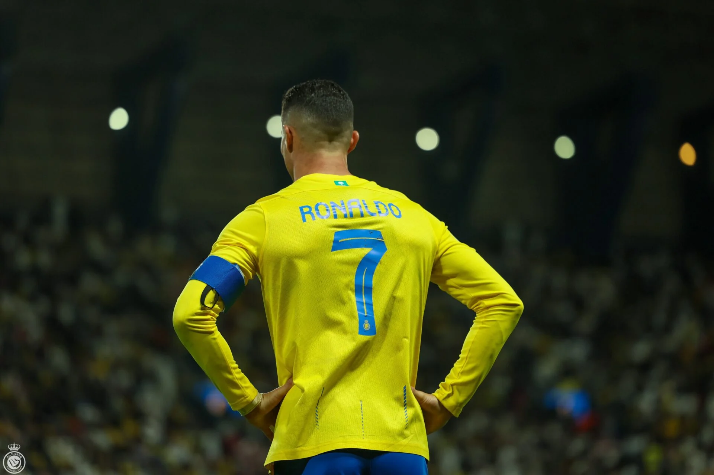

Após fazer história na Arábia, Al-Nassr prepara oferta de renovação com Cristiano Ronaldo até a Copa do Mundo de 2026
Segundo informações da rádio britânica Talksport, o Al-Nassr pretende estender o contrato do craque português, válido até junho de 2025, por mais um ano. O português de 39 anos vê com bons olhos a possibilidade de atuar no clube saudita até 2026, ano da próxima Copa do Mundo, que será disputada em Canadá, Estados Unidos e México. Atualmente como um dos jogadores mais bem pagos do mundo, um novo acordo entre o Al-Nassr e o artilheiro português pode incluir aumentos salariais de 200 milhões de euros (R$ 1,12 bilhões), com bônus adicionais.